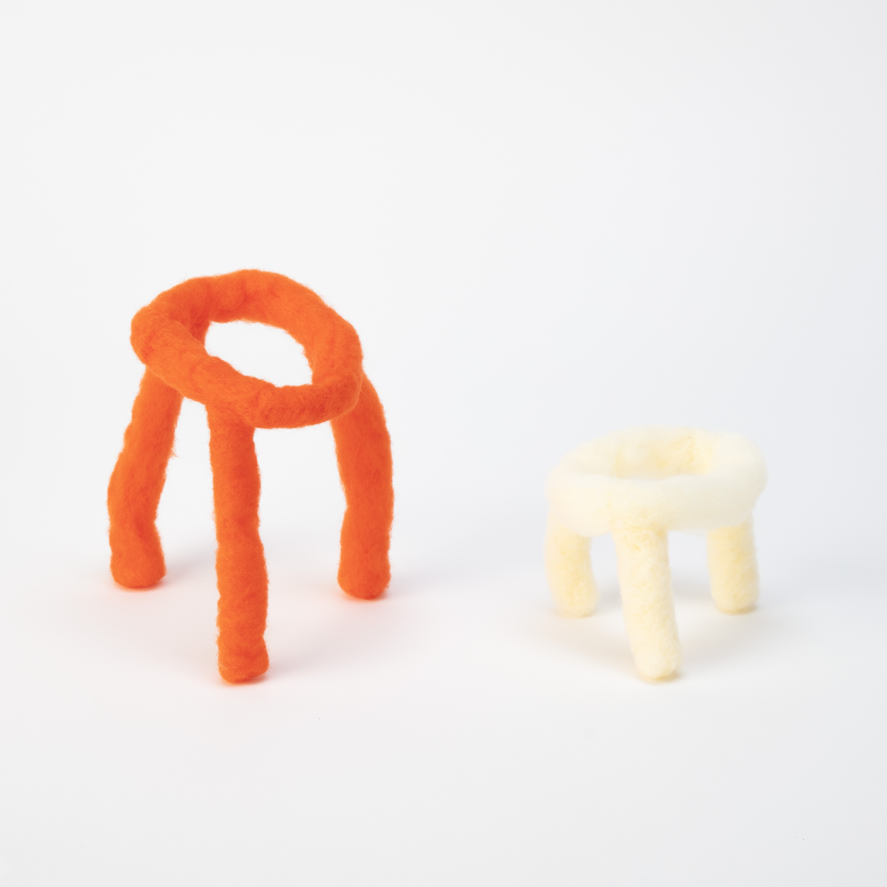

置き換える
学部3年次の演習授業「コンストラクション」での制作物 歯間ブラシと結束テープの構成を羊毛フェルトで色とかたちを置き換えた。
[Construction]
Construction : Nozomi Terashima
2024

学部3年次の演習授業「コンストラクション」での制作物 歯間ブラシと結束テープの構成を羊毛フェルトで色とかたちを置き換えた。
[Construction]
Construction : Nozomi Terashima
2024